A · Continuous components
Borrow the persistent panel anchor, precise pointer, tab selection and visible response. Keep the stage clean.
Promo preparation · Revision 2 · 4 October 2026
A 55-second Ichido product launch and app walkthrough. Precise clicks, real product components, bold phrases—and room to understand the next step.
45–60s limit1080p · 60 fpsPreproduction
Read the tightened script ↗01 · Choose a reference
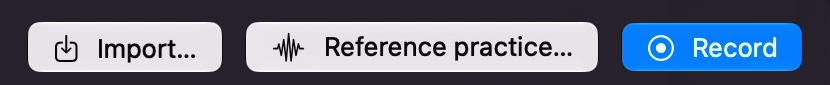
↓
02 · Listen, then record
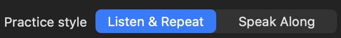
↓
03 · Keep another take
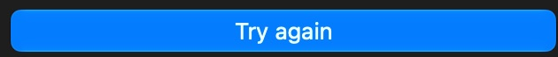
One control, one action, a clear next state.
Meaningful phrase reveals and a decisive close.
Real UI, measured delivery, private practice.
The requested mix
Local user-supplied references, shown only for review. They do not enter the promo. The breakdown uses sampled frames and transition strips; audio was not auditioned.
Borrow the persistent panel anchor, precise pointer, tab selection and visible response. Keep the stage clean.
Borrow phrase-based type reveals, purposeful color changes, feature focus and a stable CTA. The ribbon supplies Ichido's identity.
Eight scenes · 55 seconds · 3300 frames
Planning panels using actual source pieces. They are not finished motion frames. Fresh response states enable the full click sequence; documented focus/hold fallbacks work with existing assets. French practice, English comparison and ordinary recording are separate examples.
One more
try.
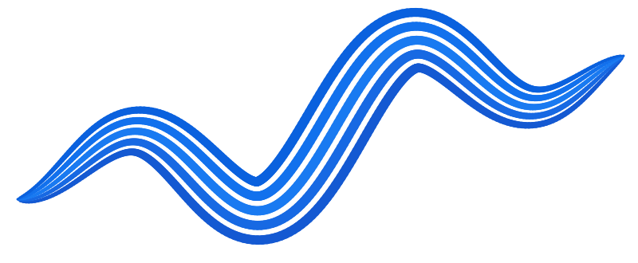
Large phrase reveal; the existing ribbon mark provides continuity.
Type resolves into the small brand position while the product stage opens.
One more try.
Brief native window context, then isolate Reference practice… and the real picker controls.
Pointer selects Reference practice…; the picker expands from that control. Import is a focus hold until its loaded state exists.
Meet Ichido, private speaking practice for Mac. Import a clip, or capture Mac audio.
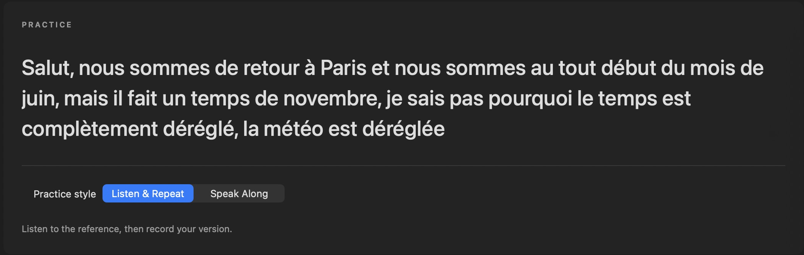
One transcript panel, the selected Listen & Repeat mode, then Start practice.
Focus the mode, then approach Start practice. Actual playing/recording states require fresh captures; otherwise show the already selected mode and label the sequence outside the app.
Listen to a phrase, then record your version.
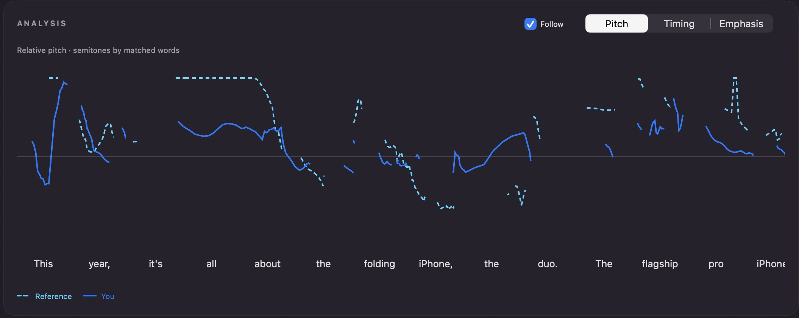
The real Compare panel becomes the hero; dashed Reference and solid You remain readable.
Pitch focus, then Timing and Emphasis clicks only after their actual response states are captured. Existing-asset fallback holds the authentic Pitch plot and highlights the other available labels without clicking.
Compare pitch, timing, and loudness with the reference.
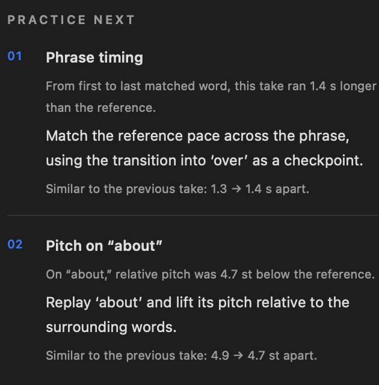
Move from the chart to the real two targets, then Try again.
Hold targets for reading; pointer approaches Try again. Click to the authentic next practice state only when supplied; otherwise end on the real button.
When enough words match reliably, two measured targets help you choose what to try next.
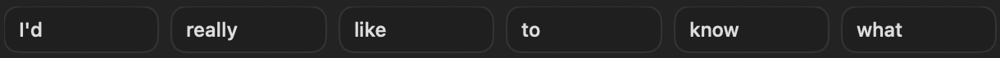
A clearly separate ordinary-recording example; a row of real transcript words.
Word hover/focus; add the click and playback response only with a captured selected-word state. Ordinary recordings never inherit comparison targets.
Record yourself, too. Click a word to replay that moment.
No account.
No recording uploads.
No analytics.
One cobalt stage: full privacy statement, then the immediately following network line stays visible through the hold.
Type enters in two phrase groups, then holds. No new product panel or artwork detour.
No account. No recording uploads. No analytics. Your recordings stay on your Mac. Update checks and optional model downloads use the network.
Get Ichido for Mac
Free while in early access · macOS 26+Return to paper, stable brand lockup and one action.
Finish the transition early and hold the CTA for at least three seconds.
Ichido. One more try.
Ready for component animation
No labels, transcripts or values were retouched. Click a crop to inspect its source pixels. Coordinates and pointer targets are in the crop map; cursor, click-ring and focus-outline SVGs are separate editorial layers.
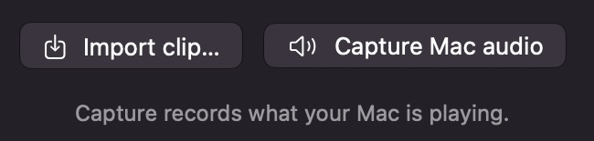
reference-inputs 650×155practice-card 2110×670practice-mode 675×77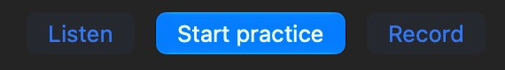
practice-actions 570×80compare-pitch 2110×840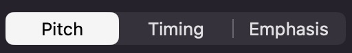
compare-modes 512×78practice-next 630×640try-again 630×65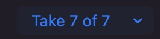
take-selector 265×65take-words 1220×71Crop map ↗ · Interaction layer usage ↗ · Curated inventory ↗
One coherent visual system
Space Grotesk · 700
Listen.
Repeat.
Compare.
DM Sans · 400
A phrase. Your own voice.
One more take alongside it.
Keep the website's two bundled fonts. Type leads the explanation; the real selected control and its next state carry the response. Interface colors and plot geometry stay faithful.
The existing ribbon mark leads. One generated cutout is optional at the bookends; macro, room and night concepts are reserve. No extra image interludes.
A smaller, concrete production brief
Removed: the long-film timing, alternate cuts, separate Words/settings/library sections, repeated entry explanations and competing artwork directions.
Still needed for full actions: authentic recording, Timing/Emphasis, retry and selected-word playback states. The capture plan gives a fallback for each. BGM, VO and motion remain later work.